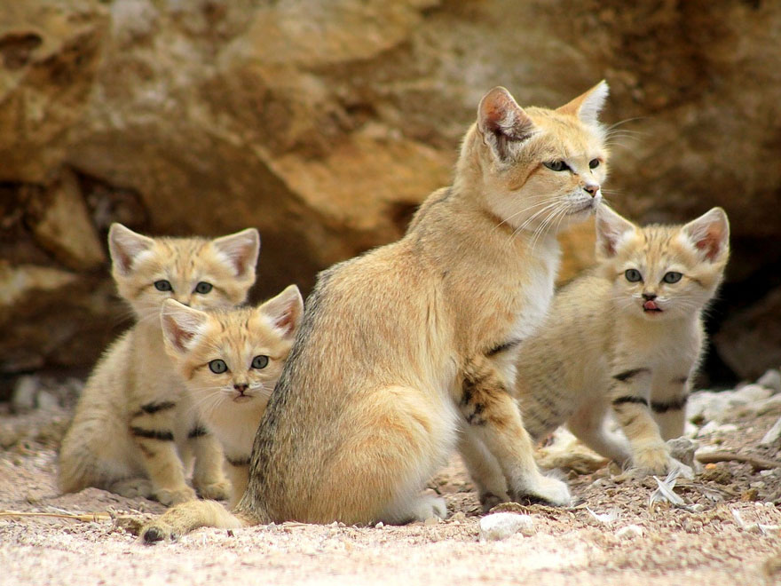
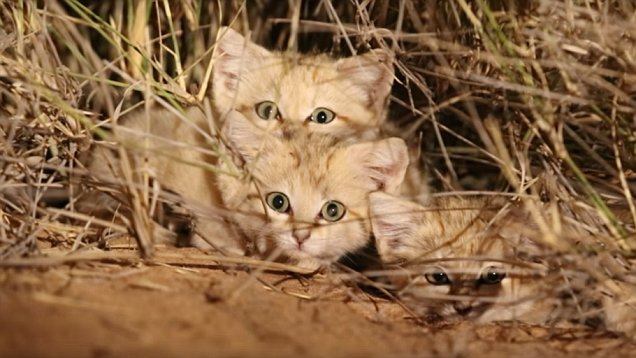
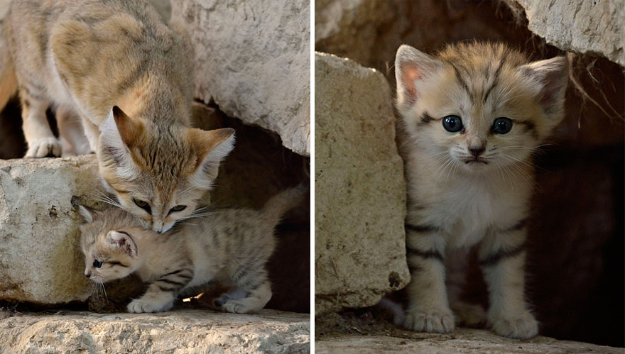
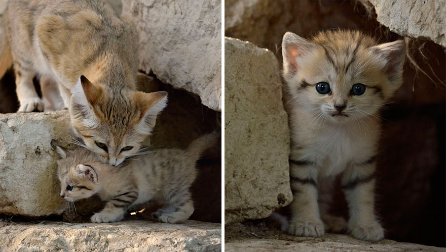

About the Sand Cat
The Sand Cat, also known as the Sand Dune Cat, is a particularly elusive species that is found living in the Sahara, the Arabian Peninsula and parts of central Asia. It is the only cat living mainly in desert environments. Even with their wide range, there is very little known about the species. They are very stealthy and spend days in burrows only coming out at night to hunt desert rodents. The cat can survive in temperatures ranging from −5 °C (23 °F) to 52 °C (126 °F) and retreats into burrows during extreme conditions. Although it will drink when water is available, the Sand Cat is able to survive for months on the body fluids in its prey. Sand Cats are specially adapted to this lifestyle. The pads on their paws are smooth, soft, and furry which leaves virtually no tracks in their sandy environment and protects their feet from the elements. Also their tan coat color provides perfect desert camouflage. The species has learned to crouch down and close their eyes when light shines on them, so it is very difficult to track them. While all of these traits are great desert survival tools, it makes species conservation very difficult.
Sand Cat Kittens Filmed for First Time in the Wild
After four years of extensive research on the Sand Cat and five expeditions to Africa, researchers from the wild cat conservation group, "Panthera", found and photographed three kittens in Morocco. The elusive kittens were documented sitting under a bush in the Moroccan Sahara at about 2am on April 26th. The kittens had likely been placed there by their mother while she went off to hunt. The kittens were estimated to be between 6 and 8 weeks old. The team from Panthera photographed and filmed the Sand Cat kittens for about an hour and installed some camera traps to record their natural behavior. The video can be seen here. Amazingly, the researchers also later observed an agitated adult female sand cat that they speculated was the mother of the kittens. They seized the opportunity and radio-collared her, which will add to the very little confirmed research on the Sand Cat.


 

Challenges with Conservation and What is Being Done
As previously mentioned, the traits that make the Sand Cat so well adapted to survive in its environment, also make it very difficult to manage their conservation. Gathering an accurate count of the species may be the most difficult part. Just last year, researchers in the United Arab Emirates made news when they announced they’d photographed sand cats in that country for the first time in a decade. Preliminary results show that the cats range much more widely than previously believed and are picky about their habitat. There are also likely fewer cats than scientists had previously estimated. The recent publicity that has been associated with this species could also be a cause for concern. People are infatuated with the animal's cuteness and many expressed an interest in getting their own sand cat after seeing the video. In some areas the cats are already being captured and sold to animal collectors. The Panthera team released a public statement saying, "We are strongly against this practice and it would lead to the direct opposite of our goal of creating awareness and protection for the species in the wild.”
Habitat degration is another major threat for the Sand Cat species. Vulnerable arid ecosystems are being rapidly degraded by human settlement and activity, especially livestock grazing. The prey of the Sand Cat is highly dependent on the presence of adequate vegetation, which may experience large fluctuations due to drought or declines due to desertification and loss of natural vegetation. They also may be killed in traps laid out by inhabitants of oases targeting foxes and jackals or in retaliation for killing their chickens.